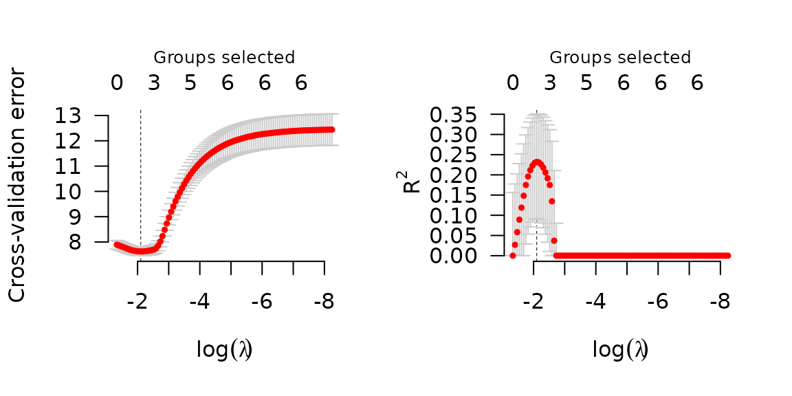
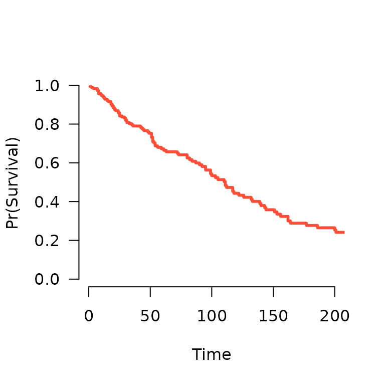
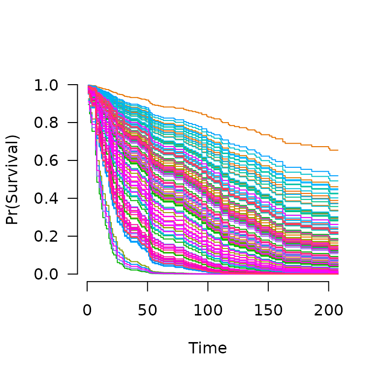

grpreg fits models that fall into the penalized
likelihood framework. Rather than estimating \(\bb\) by maximizing the likelihood, in this
framework we estimate \(\bb\) by
minimizing the objective function \[
Q(\bb|\X, \y) = \frac{1}{n}L(\bb|\X,\y) + P_\lam(\bb),
\] where the loss function \(L(\bb|\X,\y)\) is the deviance (\(-2\) times the log-likelihood), \(P_\lam(\bb)\) is the penalty, and \(\lam\) is a regularization parameter that
controls the tradeoff between the two components. This article describes
the different loss models available in grpreg; see penalties for more information on the
different penalties available.
Gaussian (linear regression)
In linear regression, the loss function is simply the squared error loss: \[ L(\bb|\X,\y) = \frac{1}{2} \norm{\y-\X\bb}_2^2; \] the factor of 1/2 is so that this loss is equivalent to deviance if the outcome \(\y\) follows a normal distribution with constant variance and mean given by \(\X\bb\).
To fit a penalized linear regression model with
grpreg:
fit <- grpreg(X, y, group)Binomial (logistic regression)
In logistic regression, the loss function is: \[ L(\bb|\X,\y) = -2\sum_{i:y_i=1}\log\ph_i - 2\sum_{i:y_i=0}\log(1-\ph_i); \] this loss is the deviance for a binomial distribution with probabilities \(P(Y_i=1)=\ph_i\) given by: \[ \ph_i = \frac{\exp(\eta_i)}{1+\eta_i}, \] where \(\be = \X\bb\) denotes the linear predictors.
To fit a penalized logistic regression model with
grpreg:
fit <- grpreg(X, y, group, family='binomial')Poisson
In Poisson regression, the loss function is: \[ L(\bb|\X,\y) = 2\sum_i \left\{y_i\log y_i - y_i\log \mu_i + mu_i - y_i\right\}; \] note that some of these terms are constant with respect to \(\mu_i\) and can therefore be ignored during optimization. This loss is the deviance for a Poisson distribution \(Y_i \sim \text{Pois}(\mh_i)\) with rate parameter given by: \[ \mh_i = \exp(\eta_i). \]
To fit a penalized Poisson regression model with
grpreg:
fit <- grpreg(X, y, group, family='poisson')Cox proportional hazards
The above models all fall into the category of distributions known as
exponential families (hence the family) argument.
grpreg also allows users to fit Cox proportional hazards
models, although these models fall outside this framework and are
therefore fit using a different function, grpsurv. In Cox
regression, the deviance is \[
L(\bb|\X,\y) = -2\sum_{j=1}^{m} d_j \eta_j + 2\sum_{j=1}^{m} d_j
\log\left\{\sum_{i \in R_j} \exp(\eta_i)\right\},
\] where \(t_1 < t_2 < \ldots
< t_m\) denotes an increasing list of unique failure times
indexed by \(j\) and \(R_j\) denotes the set of observations still
at risk at time \(t_j\), known as the
risk set.
The Lung data (see ?Lung for more details)
provides an example of time-to-event data that can be used with Cox
regression. Loading this data set into R,
data(Lung)
X <- Lung$X
y <- Lung$y
group <- Lung$groupTo fit a penalized Cox regression model,
fit <- grpsurv(X, y, group)As before, you can call plot, coef,
predict, etc. on fit:
coef(fit, lambda=0.1)
# trt karno1 karno2 karno3 diagtime1 diagtime2 age1
# 0.0000000 -4.6535992 0.4641241 -0.3283532 0.0000000 0.0000000 0.0000000
# age2 age3 prior squamous small adeno large
# 0.0000000 0.0000000 0.0000000 -0.2613796 0.1320625 0.2666665 -0.1424394Cross-validation is similar:
set.seed(1)
cvfit <- cv.grpsurv(X, y, group)
par(mfrow=c(1,2))
plot(cvfit, type='cve')
plot(cvfit, type='rsq')
In addition to the quantities like coefficients and number of nonzero
coefficients that predict returns for other types of
models, predict() for an grpsurv object can
also estimate the baseline hazard (using the Kalbfleish-Prentice method)
and therefore, the survival function. A method to plot the resulting
function is also available:
S <- predict(fit, X[1,], type='survival', lambda=0.02)
S(365) # Estiamted survival at 1 year
# [1] 0.09995821
plot(S, xlim=c(0,200))
When multiple subjects are involved in the prediction:
S <- predict(fit, X, type='survival', lambda=0.02)
S[[1]](365) # Estimated survival at 1 year for subject 1
# [1] 0.09995821
S[[2]](365) # Estimated survival at 1 year for subject 2
# [1] 0.142846
plot(S, xlim=c(0,200))